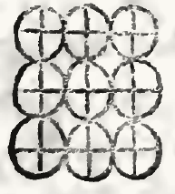

Sectio IV: De Floribus Quinquefoliis & Nive Sexangula¶
Contra si quaeratur, cur omnes adeo arbores et frutices, (aut certe pleraeque) florem explicent forma quinquangulari, numero scilicet foliorum quinario, quem florem in pomis et pyris sequitur fructus dispositio, in eodem vel cognato numero, quinario vel denario: quini intus loculi continendis seminibus, dena filamenta: quod et obtinet in cucumeribus et id genus aliis: hic inquam locum habet speculatio pulchritudinis aut proprietatis figurae, quae animam harum plantarum characterisavit. Et detegam obiter cogitationes meas super hac re.
Duo sunt corpora regularia, dodecaedron et Icosaedron, quorum illud quinquangulis figuratur expresse, hoc triangulis quidem, sed in quinquanguli formam coaptatis. Utriusque horum corporum, ipsiusque adeo Quinquanguli structura perfici non potest sine proportione illa, quam hodierni Geometrae Divinam appellant. Est autem sic comparata, ut duo minores proportionis continuae termini iuncti constituant tertium; semperque additi duo proximi, constituant immediate sequentem, eadem semper durante proportione, in infinitum usque. In numeris exemplum perfectum dare est impossibile. Quo longius tamen progredimur ab unitate, hoc fit exemplum perfectius. Sint minimi 1. et 1. quos imaginaberis inaequales. Adde, fient 2. cui adde maiorem 1. fient 3. cui adde 2. fient 5. cui adde 3. fient 8. cui adde 5. fient 13. cui adde 8. fient 21. Semper enim ut 5 ad 8, sic 8 ad 13, fere, et ut 8 ad 13. sic 13 ad 21. fere.
Ad huius proportionis seipsam propagantis similitudinem, puto effictam esse facultatem seminariam: itaque in flore praefertur seminariae facultatis γνήσιον vexillum Quinquangulum. Mitto caetera quae ad huius rei confirmationem iucundissima contemplatione possent adduci. Sed proprius illis debetur locus. Nunc haec exempli tantum causa praemisimus, ut in rimanda figura Nivis sexangula simus instructiores exercitatioresque.
Cum enim proposuissemus inquirere originem figurae huius in nive inter causas extrinsecas et intrinsecas: inter externas primum se offerebat frigus. Condensatio sane est a frigore: per condensationem vero vapor coit in figuram stellae: videbatur igitur frigus illi figuram praestare stellae. Tunc itum est ad considerationem aliam, an frigus sit Na-
f. 0035 · p. 13tura quaedam ut Medicorum Calor? Videbatur enim esse mera privatio, cui neque mens, sexanguli fabricatrix, nec omnino operatio ulla propria.
Sed ne misceamus quaestiones, maneat frigori condensatio: potuit condensatio fieri, ut videtur, in formam globosam rectius. Imo si consideretur frigus late fusum, et vapor illi superficietenus occurrens, magis est consentaneum, ut condensatio fiat in formam omnino planam, superficiei similem et eam quorumcunque terminorum Ut si tota vaporis extima superficies ex frigore densitatem, ex densitate pondus, ex pondere casum, ex casu comminutionem in frustula seu bracteas nancisceretur: utique non omnes bracteae, quin imo paucissimae, ac nescio an ullae evadent sexangulae, praesertim radiis adeo concinne striatis.
Admonebant istae striae rei illius quae contingit in Hypocaustis vapidis, brumali rigore pertusas fenestras obsidente. Luctantur circa illas angustias frigidus aer et vapor. Quoties enim sese mutuo contingunt, calor superiora petit, frigus inferiora. Est enim in calido dilatatio materiae, in frigido densitas et pondus, pellitque calida sursum. Vapore igitur confertim exire nitente, fit fuga vacui, ut et frigidus aer confertim irrumpat, unde limbi patentis fenestrae vel rimulae frigidissimi efficiuntur. Ad eos limbos quicquid appellit vaporis, continuo gelatur succeditque in illam materiam frigus aeque magnum, ut quicquid porro vaporis ad hanc appellit pruinam, et ipsum geletur, appositione continua, intercedente tamen seseque introrsum insinuante rectis lineis aere frigido: qua alternatione ingressus, et egressus, illae pruinosae vaporis consistentiae, strias sortiuntur et acutos radios.
Nihil ad hoc instar de figuratione nivulae nostrae dici potest: Nam quinam hic ingressus, qui exitus, quae angustiae, quae lucta in patentissimis aeris campis? Concessero inter cadendum ex alto per vapidum aerem fieri aliquam ad villos appositionem a contingentibus vaporibus. At quare sex locis, quodnam senarii principium? quis capitellum antequam caderet in sex effigiavit cornua frigida? Quae causa statuens in illa superficie iam iam condensanda sex puncta, ad quae seni circumradii connectantur?
f. 0036 · p. 14Cum itaque causa externa, frigus, haec efficere nequeat: internam aliquam esse necesse est, vaporisque vel comitem vel alio quocumque modo propriam?
At haec perpendentem subiit admiratio, cur radii non potius in omnem ambitum sphaericum disponantur? Cur si internus calor est huius rei author, in plana tantummodo superficie operatur: qui undiquaque aequaliter se habet, non vero in sola plana superficie vaporis inest?
Dum in his luctor meditationibus, dum ratio postulat radios in omnem ambitum distributos, incidit quod alias saepe cum admiratione spectavi, stellulas huiusmodi non primo statim casus momento sterni super planitiem, sed particulis nonnullis sublimes teneri, denique temporis mora subsidere in planiciem. Ex illa ratiocinatione veluti patre, et ex hac experientia veluti matre, nata est mihi opinio ista: stellulas istas inter cadendum trinis constare villosis diametris, decussatim ad unum punctum coaptatis, sex extremitatibus in orbem aequaliter distributis, ita ut tribus tantum villosis radiis incidant, reliquis trinis, (qui sunt incidentium oppositi in iisdem rectis diametris,) in sublimi stent, donec flexis iis, quibus stellula sustinebatur, reliqui hactenus sublimes, in eandem planiciem cum prioribus, intermediis locis defluant.
Huius opinionis vim prosequar per totum, postea demum an vera sit examinabo: ne fortassis importuna vanitatis detectio me prohibeat, quod institui, verba de re Nihili facere.
Hoc igitur in causa positum esto, quacunque causa sit horum sex radiorum, eam undique aequaliter fusam esse in omnes plagas: ut si frigus est causa senum radiorum, frigus igitur singulas vaporis portiunculas circumstare aequaliter, aut aequalibus certe intervallis undique: Sin calor internus, et hunc in omnes sphaerae plagas ex uno, et eodem centro operari.
At sic nondum discussa sed translata est quaestio. Nam nondum patet, quare non quinque vel septem, sed omnino sex villosi radii coaptentur ex eodem centro?
f. 0037 · p. 15Et si quaeras a Geometris, qua nam in figura tres Diametri sese orthogonaliter seu in forma crucis duplicis, in eodem centro secent: is respondebit, in octaedro, connexis angulis oppositis. Octaedron enim habet sex angulos. Quare igitur fit, ut nix inter cadendum, priusquam complanetur, tribus villosis diametris, se invicem orthogonaliter secantibus innitetur ipsum τὸ σκελετὸν Octaedri? Vt si radiorum extrema vicina rectis duodenis connectas, integrum octaedri corpus repraesentassis?
Quae causa igitur, quod in hos tres villosos radios potius fit condensatio quam in globum integrum?
Possum quidem dicere modum unum quo ista fiant materiali necessitate: sed is assumit aliquid, quod rursum plus habet admirationis, quam hoc ipsum quod iam erat demonstrandum. Dicam tamen, si forte ex comparatione multorum falsorum eliciatur veritas. Esto ut vapor, quando primum frigus irruens sentiscit, coaguletur in sphaerulas certae quantitatis. Hoc est consentaneum. Nam ut in aqua, Gutta minimum naturale est de fluido; propterea, quod aqua suo pondere non diffluit amplius, quando est infra guttae quantitatem: sic etiam facile concedi potest, inesse in vaporis materia tenacitatem aliquam, qua possit resistere frigori, in certa aliqua quantitate, puta guttae vapidae.
Secundo esto ut hae sphaerae vapidae se invicem contingant in certa dispositione: puta quadrangulari in plano, cubica in solido, qua de supra: Sic enim tangetur Sphaerula quaelibet ab aliis sex, quarum Solae quatuor hic in plano depingi possunt quinta et sexta intelligenda est superponi et supponi. His ita positis et assumptis, frigore vero per spacia irruente: sphaerulae a contactu uno ad oppositum erunt munitae contra frigus: itaque versus centra quidem sphaerularum fiet condensatio, sic tamen, ut etiam versus diametros contactuum, quibus scilicet locis tutae sunt a frigore.


Verum non immerito, ut praedixi, quaerat aliquis, qua vi sic disponantur sphaerulae in directum?
f. 0038 · p. 16Si materialiter fieri aliter non posset iam peractum esset negocium. At possunt materialiter duobus aliis modis disponi, ut supra dictum. Ac praeterea possunt omnes tres ordines ordinati confundi, ut fiat dispositio varia.
An hanc adsciscemus dispositionis huius causam, quod in hac sola dispositio est sibi ipsi undique similis, et puncta contactuum distribuuntur aequaliter, in caeteris nequaquam. Etsienim ut supra dictum, globi singuli a duodenis aliis tanguntur, at spacia inter globos alternis triangula et quadrangula sunt: hic omnia undique quadrangula. Illic diametri quidam duo oppositorum contactuum sese secant orthogonaliter, reliqua quatuor non item: hic omnes tres diametri sese secant aequaliter et orthogonaliter. Illic connexis extremis diametrorum fit cuboctoedron, hic Octaedron intra sphaerulam quamlibet.
Praestantia quidem hinc patet dispositionis directae prae obliqua: at causa nondum comparet, quae sphaeras hac potius quam illa ratione disponat. Num facit hoc frigus? At quomodo?
Nam si quid agit condensat aut penetrat materiam qua hiat illa, aut qua debiliter resistit. Et ut largus sim, directa quidem in profundum dispositionem causari possit descensu rectilineo, versus terram: at in transversum unde haec directio?
Restat igitur, ut calor internus vaporis hanc guttarum dispositionem cubicam efficiat: si modo est cubica ipsorum dispositio, hoc est, si Nihil nostrum est Aliquid.
Huc autem devoluta re, iam perinde est, sive calor quamlibet guttam seipso in formam Octaedri disponat: sive totam materiam in seriem stellarum ordinatam dispescat, atque ita singularum sphaerarum internam dispositionem per externam universarum seriem adiuvat. Neutrobique casu ordo existere potest tam constanter, ubi confusio, ut hic quidem, in proclivi est.
Sed et argumenta sunt, ut potius credamus singulas guttas, sine ope externi contactus seipsis disponi. Etenim, si figura singularum oriretur ab ordine et contactu mutuo plurium, necesse foret, omnes in vicem aequales esse stellulas. Iam vero magnum inter eas cernitur discrimen magnitudinis. Ipsa quin etiam multarum ordinatio, multum habet insolentiae.
f. 0039 · p. 17Nihil itaque profecimus, nisi pateat modus, quo calor internus guttam vapidam in tribus diametris, forma octaedrica vel certe sexangula firmet, ut ad eas fiat materiae per condensationem collectio.
Possit aliquis existimare, volitare villosa ista ramenta solitaria, interque cadendum decussatim concurrere fortuito. Verum id falsum est. Non enim perpetuo trina, non in punctis mediis, non ad unum punctum concurrerent. Adde quod villi omnes a centro seu stella, seu decussationis geminae aversi extrorsum porriguntur pene ut foliola in ramis abiegnis: quod argumento est, in centro nidulari vim formatricem, indeque in omnes plagas aequaliter sese didere.
Sed fortassis haec causa est trium diametrorum, quod totidem sunt diametri plagarum in animalibus? Habent enim superas, inferas, anteriores, posteriores, dexteras, sinistras partes? Si quis hoc dixerit, mea is opinioni appropinquabit, sed praeter opinionem in paradoxa pertrahetur concessione sua. Primum enim consideret, quae natura sit huius caloris, quae similitudinem animalis architectetur in stellula nivis. Deinde videat, cui bono? Quid enim animali commune cum Nive? Nix ad vitam, qua caret, plagis istis opus non habet. Tertio perpendat, ipsas animalis partes, non tam ad figuras geometricas, cubumque, primam solidarum figurarum, velut ad Archetypum suum accommodatas: quam necessitate quadam ad finem obtinendum directas. Prima enim superi et inferi distinctio est a loco, quae est terra superficies: pedes igitur deorsum vergunt ut contra pondus corporis nitantur, Caput sursum est ut nervos imbre opportuno continue humectet, utque oculi et aures a planitie remotissimi plurimam eius circumferentiam in conspectu habeant, obstaculis remotis, denique ut cibus pondere, potus humore suo praecipitatus in suum locum descendat, neque continua ut in plantis uno loco fixis attractione opus haberet. Altera anticae et posticae distinctio tributa est animantibus ad motus exercendos, qui in recta linea super terra superficiem tendit a loco ad locum. Itaque duae hae diametri necessario orthogonaliter se mutuo secant, signantque superficiem. At cum animalia non possint esse superficies, sed necessario corpora accipiant: tertiam diametrum dextri et sinistri ex ratione corpulentiae necesse fuit accedere, qua fit animal
f. 0040 · p. 18quasi geminum: ut esset etiam in incessu, moventis et moti discrimen alternis. Non igitur, quae cubica sunt, hominis gerunt similitudinem propter aliquem figurae pulchritudinem: sed homo cubi acquisivit similitudinem, quasi concinnatam ex variis usibus ceu Elementis.
Itaque omnibus examinatis, quae occurrebant, sic ego sentio, causam figurae in nive sexangulae, non aliam esse, quam quae est figurarum in plantis ordinatarum numerorumque constantium. Ac cum in his nihil fiat sine ratione summa, non quidem quae discursu ratiocinationis inveniatur, sed quae primitus in creatoris fuerit consilio, et ab eo principio hucusque per mirabilem facultatum animalium Naturam conservetur; ne in Nive quidem hanc ordinatam figuram temere existere credo.
Est igitur facultas formatrix in corpore Telluris, cuius vehiculum est Vapor, ut humana anima, spiritus: adeo ut nullus uspiam existat vapor, quin ut calore quodam id effectus est quod esse dicitur, puta vapor, eodemque calore conservatur, ut id esse pergat: sic ratione etiam formatrice, quam alii calorem Opificem dicunt, contineatur.
Sed duarum obiectionum solutione, quod reliquum est de opinione mea, declarabo. Etenim obiicere possis: In plantis finem subsequentem, qui est, Constitutio certi corporis Naturalis, arguere, Rationem formatricem in aliqua materia praecessisse: Vbi enim media ad certum finem ordinata, ibi ordo, ibi nullus casus, ibi mera mens, mera Ratio: In Nivis vera formatione finem nullum spectari posse, neque fieri per figuram sexangulam, ut Nix perduret, aut corpus Naturale definitum certa et durabilis formae fiat. Respondeo, Rationem formatricem non tantum agere propter finem sed et propter ornatum, nec solum tendere ad corpora naturalia efficienda sed et solere ludere in fluxis, quod multis fossilium exemplis patet. Quorum ego universorum rationem a ludicro (dum dicimus Naturam ludere) ad hanc seriam intentionem transfero: quod puto, Calorem, qui hactenus tutabatur Materiam; ubi a circumstanti frigore vincitur: ut hactenus ordine agebat (ratione quippe formatrice imbutus) ordine pugnabat, sic iam suo quodam ordine et fuga
f. 0041 · p. 19sese comparare, pedemque referre: et diutius haerere in sparsis istis et ordinatim veluti per Aciem distributis ramis, quam in tota reliqua materia; atque sic curae habere, ut (quod de Olympiade referunt historiae) non inhoneste nec inverecunde cadat.
Alius aliquis obiiciat, plantis singulis singulas esse facultates animales, cum seorsim etiam subsistant corporum plantarum singula: proptereaque nil esse mirum, singulis etiam singulas aptari figuras. In nivis vero qualibet stellula peculiarem fingere animam, per esse ridiculum: quare ne quidem figuras nivis eodem modo ex Animae opere, ut in plantis deducendas.
Respondeo, rem utrinque similiorem esse, quam, qui haec obiicit, credere possit. Demus, plantis singulis singulas esse facultates: at ea omnes soboles sunt unius et eiusdem facultatis universalis, quae in terra inest: quaeque se habet ad plantas, ut facultas aquae ad pisces, facultas humani corporis ad pediculos, canini ad pulices, ovilli ad aliud genus pediculorum. Non enim omnes plantae ex semine, pleraeque ἐξ αὐτομάτου primum ortae, etsi sese porro seminent. Facultas enim terrae, quae seipsa una est et eadem, dividit sese in corpora et cum corporibus, inque ea inolescit et pro cuiusque materiae conditione interna externisve aliud atque aliud architectatur. Ita in vapore quoque, quem totum tota possederat Anima, nihil mirum si frigore divisionem totius continui moliente, ob contractionem partium, circa partes ipsa, ut circa singula tota formando occupetur.
O vere mortuam vitam sine philosophia. Hanc enim in Nive formatricem facultatem si scivisset illa Aesopicae fabellae adultera, persuadere marito potuisset, se ex nive concepisse, spurioque suo non tam facile fuisset orbata, calliditate mariti.
Dixi de authore figurae: restat ut inquiramus de figura ipsa, sive illa existat ex decussatione trium diametrorum, quod hactenus est inter supposita: sive inde ab origine sit sexangula, de quo postea. Nunc pergendum in tramite coepto. Causa igitur cur haec facultas Octaedri dispositionem angulorum potius imitetur, haec esse possit. Primum universum genus animorum Geometricis et regularibus sive Cosmopoeticis figuris cognatum est: quod multis documentis pro-
f. 0042 · p. 20bari potest. Cum enim Animi sint quaedam exemplaria Dei Creatoris, certe in Dei Creatoris mente consistit Deo coaeterna figurarum harum veritas. Amplius cum certissimum sit, ipsos etiam animos penitissima sui essentia recipere quantitates, sine materia Physica, an cum ea, non disputo: consentaneum est, figuratas potius recipere quantitates, quam rudes: si figuratas, quare figuras regulares, solidas, quia animi sunt non superficierum sed corporum solidorum.
Est autem inter regulares solidas prima, Cubus, primogenita, parens caeterarum. Eius vero foemina quasi quaedam est Octaedron, habens tot angulos, quot cubus plana, eorumque centra, quibus singulis singuli respondent ex Octaedro Anguli.
Portiuncula itaque materiae vapidae deserenda, si figuram debet recipere, quod iam fecimus consentaneum, primum cubum arripiet, eiusque socium Octaedron. Quorsum supra etiam materialis alludebat necessitas, globorum aequalium in unum acervum confusorum. Confundebantur enim et adumbrabantur in punctis contactuum rudimenta cubi Octaedrique. At cur Octaedri figuram potius quam Cubi? An quia Cubus est figura dilatationis, Octaedron collectionis? Iam vero et materia et vis calorifica colliguntur impetita hostiliter a frigore. Unde vero certum sit, illam esse dilatationis figuram, hanc collectionis? Nempe quia octo anguli, quibus illa foris diditur, iidem in hac intus centrum circumsistunt eodem numero. Etenim si cubo adimas angulos suos octonos resectos lateribus aequalibus, introrsumque componas plane constitues Octaedron. Et Cubus in plures, sc. in octo angulos diffunditur, Octaedron in pauciores, puta sex.
Aiunt gemmari, Naturalia in Adamantibus inveniri Octaedra, perfectissimae et limatissimae formae. Id si est, multum nos confirmat. Nam facultas animalis, quae in terra indidit Adamanti formam Octaedri, ex penitissimo sinu suae Naturae depromptam, eadem cum vapore progressa de terra, figuram eandem indidit et Nivi ex vapore illo consistenti.
Quanquam, quod decussationem trium diametrorum attinet, in ea non magis inest Octaedri quam cubi forma. Illic anguli,
f. 0043 · p. 21hic centra planorum connectuntur huiusmodi tribus diametris; illic anguli diametrorum ad centrum, hic angulus qui corpus finit exprimitur. Frustra igitur de totius figurae electione satagimus, ubi est utriusque rudimentum saltem.
Quo vero abripior stultus ego, qui dum pene Nihil donare affecto, pene etiam Nihil ago: quia ex hoc pene Nihilo pene Mundum ipsum, in quo omnia, efformavi: cumque ab animula minutissimi animalculi supra refugerim, iam ter maximi Animalis globi telluris, animam in Nivis Atomo exhibeo?
Itaque pedem referam, et sedulo dabo operam, ut quod donavi, quodque dixi, id nihil sit. Fiet autem id, si quam cito Nivula mea liquescit, tam cito ratiunculas istas, ego contrariis ratiunculis profligavero, atque annihilavero.
Dum enim ista scribo, rursum ninxit, et confertius, quam nuper. Contemplatus sum sedulo corpuscula Nivis, cadebant igitur omnia radiosa, sed duorum generum: quaedam minuta valde, radiis circumcirca insitis, incerto numero, et simplicibus, sine villis, sine striis, erantque subtilissimi, in centro vero colligati ad grandiusculum globulum: atque horum erat maxima pars. Interspargebantur autem secundi generis rariores sexangulae stellulae earumque nulla aliter nisi plana, neque volitabat, neque cadebat. Villis etiam in eandem planiciem cum caule suo compositis. Vergebat autem inferius deorsum radiolus septimus, quasi radix aliqua, in quam cadentes incumbebant, eaque sustinebantur sublimes aliquandiu: quod me supra non fugit, sed sinistre exceptum est, ac si terni diametri non essent in eodem plano. Itaque non minus quod hactenus dixi, quam quo dedixi, a Nihilo quam proxime abest.
Primum genus grumosum, puto esse ex vapore iam pene deserto a calore, et iam iam in guttas aqueas condensando. Itaque et rotunda sunt, et figuram pulchram non sortiuntur, deserta iam ab architecto, et radiosa sunt undique, iis principiis, quae supra ad contemplationem pruinosae consistentiae in fenestris sunt adhibita.
In secundo vero genere, quod est stellarum, locum nullum habet contemplatio cubi vel Octaedri, neque ullus guttarum contactus: cum
f. 0044 · p. 22plana incidant, non ut supra sum opinatus, decussata trinis diametris.
Etsi igitur Formatrix anima hic quoque locum suum tuetur, manetque in causa: de electione tamen figurae quaestio est redintegranda. Primum cur plana? An quia non recte supra ademi planas formatricibus corporum. Nam in omnibus floribus inest quinquangulum planum: non dodecaedrum solidum. Tunc causa planae figurae vere haec esset: quod frigus calidum vaporem in aliqua planitie tangit nec ita totum vaporem aequaliter circumstat cum stellulae gignuntur, ut cum grumi cadunt.
Cur autem sexangula? An quia ex regularibus haec prima est vere plana, et quae in nullum corpus secum colligatur? Nam Trigonus Tetragonus pentagonus corpora efficiunt. An quia sexangulum sternit planitiem, excluso vacuo? At idem facit triangulum quadrangulum? An quia proxima haec circulo ex iis quae planitiem sternunt, excluso vacuo. An hoc discriminis inter facultatem sterilia figurantem, et alteram illam, quae foecunda figurat, ut illa triangula vel sexangula faciat, haec quinquangula? An denique, ipsa huius formatricis Natura in intimo sinu suae essentiae particeps est sexanguli?
Ex quinque adductis causis prima, secunda, et tertia hoc sibi usurpant, facultatem formatricem, e re nata consilium capere, et pro opportunitate campi aciem instruere: ut quia pugna calidi vaporis et frigidi aeris in planitie existit, non per corpulentiam, ipsa quoque figuram eligat quae planitierum est potius, quam corporum. Itaque et materialis necessitatis rationem haberet in secunda et tertia. Nam prima causa sola sexanguli proprietate freta est, respiciens decentem congruentiam huius figurae ad hanc pugnam. In plano pugna, necessario igitur figura plana, at non necessario figura talis, quae ad nullum corpus secum ipsa coeat, sed ideo solum talis quia ut corporibus physicis figurae respondent, quae solidum ambeunt, sic planiciebus figura quae solidum non ambeunt: hic decentia formalis spectatur, non necessitas materialis.
At in secunda et tertia hoc dicendum esset, necessitate etiam materiali eligi a formatrice sexangulum, ne quid scilicet relinquatur va-
f. 0045 · p. 23cuum, et ut commodius fieri possit collectio vaporis in nivis consistentiam.
In circulo enim commodissime fieret, at quia circelli vacua spacia relinquunt, ideo circuli similior eligitur figura. Verum huic causae iam suprafuit opposita inaequalitas stellularum, quarum aliquae minutissimae sunt, radiis etiam exilissimis et simplicibus, sine villis. Quod est argumento, non magnam aliquam vaporis planiciem simul coire in nivem sed seorsim planiticulas, minimas, alias post alias, easque inaequales. Non habet ergo locum consideratio exclusionis vacui, quae regnat tantum in divisione integra superficiei in sexangula aequalia. Itaque fiet ut secunda et tertia causa e numero deleantur, nisi quatenus ad primam redigi possunt, ut formatrix facultas sexangulum eligat, nulla materiae spaciorumque necessitate coacta, sed solum decentia hac invitata, quod alias sexangulum struat planiciem excluso vacuo, sitque (ex iis figuris, quae idem possunt) circuli similima.
Quarta quidem causa sic nuda consistere nequit. Nam alba lilia trinis senisque effigiantur foliis, et sterilia non sunt: eodem modo multi Calyces florum fere sylvestrium. Nisi forte hoc discriminis sit, quod fructus sub flore quinquangulo enascitur carnosus ut in pomis pyrisque, aut pulpaceus, ut in rosa, cucumeribus seminibus intra carnem vel pulpam abditis. At sub flore sexangulo nil enascitur, nisi semen in sicco loculo, estque velut in flore fructus. Aut est hoc forte discriminis, quod nullus flos sexangulus in arboribus et fruticibus, sed in herbis et fere bulbaceis. Vel consideret alius ipsos succos an aliquod in iis discrimen secundum figuras florum.
Res mihi nondum comperta est, itaque sufficiat leviter admonuisse alios de hac quarta causa.
Pro quinta causa faciunt opera huius formatricis facultatis alia, ut Crystalli, omnes sexangulae, cum Adamantes Octaedrici sint rarissimi. Sed Formatrix telluris facultas non unam amplectitur figuram, gnara totius Geometriae, et in ea exercita. Vidi enim Dresdae in aede Regia cui stabulo nomen, exornatum Abacum aere argentoso, ex quo quasi efflorescebat dodecaedron avellanae parvae magnitudine, dimidia parte extans. Extat et in descriptione thermarum Bollensium I-
f. 0046 · p. 24cosaedri pars anterior inter fossilia. Itaque verisimile est hanc facultatem formatricem pro diverso humore, diversam fieri. In vitriolo crebra est figura cubica Rhombica. In Nitro sua est figura. Dicant igitur Chymici, an in Nive sit aliquid salis, et quod nam salis genus, et quam illud alias induat figuram. Ego namque, pulsatis Chymiae foribus, cum videam, quantum restet dicendum, ut causa rei habeatur: malo abs te, Vir solertissime, quid sentias, audire, quam disserendo amplius fatigari.
Nihil sequitur
FINIS.